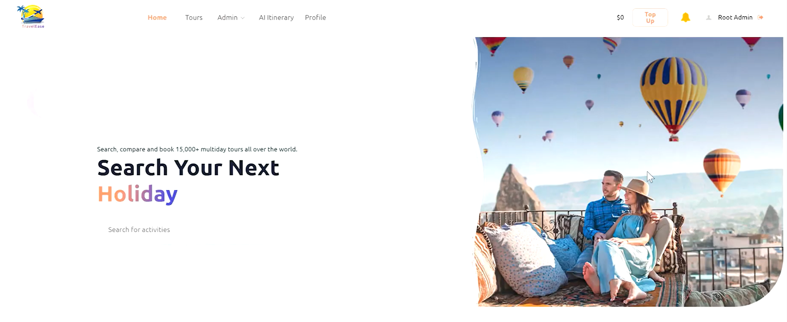

TravelEase
A full-stack travel management application built on OutSystems, featuring AI-powered itinerary generation, AI photo creation, and end-to-end booking workflows. Designed with modular atomic and composite services for user management, payments (Stripe integration with wallet system), and transaction handling, supported by optimized SQL queries for efficient data retrieval.